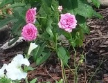
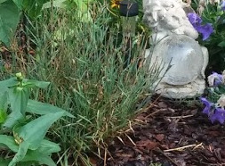

General Mini Rose Info
- Blooms in the early summer
- Deadhead regularly
- No thinning necessay
- General fertilizer
- 
- Pests may include deer and bugs, treat with garden pest spray
- Don't always do well and sometimes don't come back
- Located in various gardens with several colors and size of plants
- For more info visit Mini Rose info
General Tulip Info
- Bloom in the spring
- Clip all foliage after flower fades and leaves start to yellow
- No need to thin
- General fertilizer

- Pests include deer,bunnies
- Fall planted bulbs that don't always give good blooms
- Located in various gardens with several colors and sizes
- For more info visit Tulip info
General Phlox Info
- Blooms in the summer
- Clip all foliage after flower fades, deadhead and cut down occasionally
- Thin in spring and during season as flower spreads
- General fertilizer

- Pests may include deer but rare
- Tall plant with sometimes massive heads, great for bouquets
- Located in various gardens mostly in front, with several colors including pink, purple and white
- For more info visit Phlox info
General Echinacea (Conflower) Info
- Blooms in the summer
- Clip all foliage after flower fades, deadhead occasionally
- Thin in spring and during season as flower speads
- General fertilizer

- Pests include deer, rabbits and ground hog
- Perenniel,tall and spread through gardens, good to naturalize the woods edge
- Located in various gardens with colors being pink/purple, and white mostly in front
- For more info visit coneflower info
General Bellflower(Campanula) Info
- Blooms in the early summer
- Clip all foliage after flower fades, deadhead regularly
- No need to thin however they sometimes pop up in random places
- General fertilizer

- No known pests
- Perenniel,low growing
- Located in various gardens mostly in front with purple/blue blooms
- For more info visit Bellflower info
General Carnation Info
- Blooms late spring , early summer
- Deadhead regularly to promote new blooms
- No need to thin
- General fertilizer
- 
- no known pests
- Perenniel,At the end of the flowering season, cut your carnation stems to ground level.
- Only one carnation, but doesn't always come back
- For more info visit Carnation info
General Daffodil Info
- Blooms in the spring
- Clip all foliage after flower fades and leaves start to yellow<
- No thinning neccesary , deadhead regularly
- General fertilizer

- Pests may include deer and rabbits but rare
- several varieties in the gardens also known as Jonquil as pictured
- Located in various gardens mostly in front and side , yellow and white
- For more info visit Daffodil info